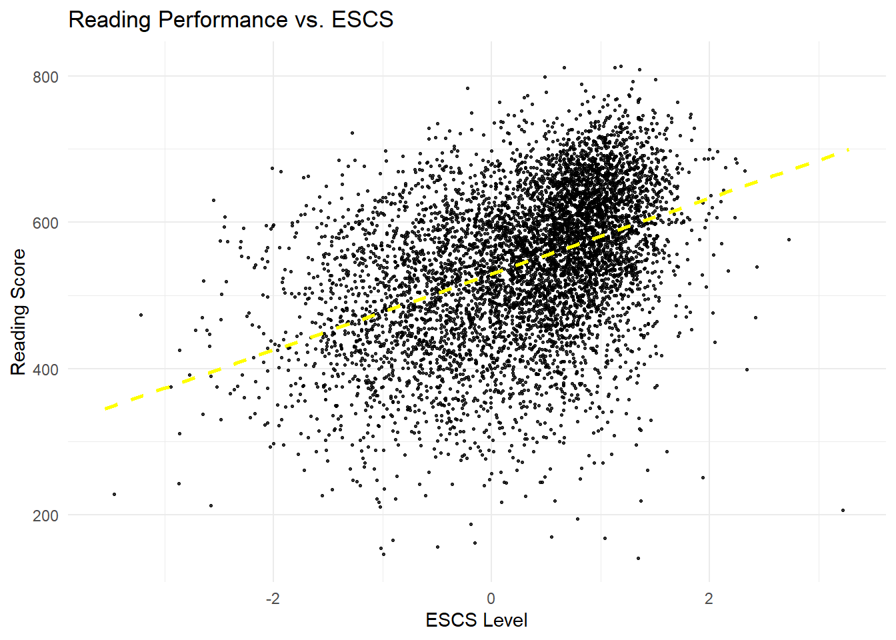

pacman::p_load(tidyverse,haven,dplyr,tidyr,ggplot2,patchwork,ggthemes,ggiraph,plotly)Take Home Exercise 02
1.Introduction
In this take home exercise, we focus on providing insight and implement to our classmates’ work.The data set used in this exercise will be same as the previous one.The same package such as tidyverse, ggplot2 will be used but provide different solution to our classmates’ work.
2.Data preparation
2.1 Loading package
2.2 Load Data set into R enviroment
The data set will be used is prepared in early in class exercise 1, we will just import in into R again.
stu_qqq_SG <-
read_rds("data/stu_qqq_SG.rds")2.3 Prepare the data set
Since we are going to examine and redo our classmates’ work, in this section the same step will be used to make sure the variables and data set we use is in a same manner.
stu_qqq_SG <- stu_qqq_SG %>%
mutate(
Math = rowMeans(select(., starts_with("PV1MATH"), ends_with("PV10MATH")), na.rm = TRUE),
Reading = rowMeans(select(., starts_with("PV1READ"), ends_with("PV10READ")), na.rm = TRUE),
Science = rowMeans(select(., starts_with("PV1SCIE"), ends_with("PV10SCIE")), na.rm = TRUE)
)
new_data <- select(stu_qqq_SG,CNTSTUID,CNTSCHID,ST004D01T, ESCS, Math, Reading, Science)
summary(new_data) CNTSTUID CNTSCHID ST004D01T ESCS
Min. :70200001 Min. :70200001 Min. :1.000 Min. :-3.5488
1st Qu.:70201836 1st Qu.:70200040 1st Qu.:1.000 1st Qu.:-0.2327
Median :70203674 Median :70200081 Median :2.000 Median : 0.4817
Mean :70203673 Mean :70200082 Mean :1.508 Mean : 0.2904
3rd Qu.:70205513 3rd Qu.:70200123 3rd Qu.:2.000 3rd Qu.: 0.9036
Max. :70207345 Max. :70200165 Max. :2.000 Max. : 3.2780
NA's :47
Math Reading Science
Min. :252.1 Min. :141.2 Min. :200.1
1st Qu.:505.0 1st Qu.:478.1 1st Qu.:497.4
Median :583.0 Median :552.9 Median :569.3
Mean :574.5 Mean :543.6 Mean :560.8
3rd Qu.:648.0 3rd Qu.:617.5 3rd Qu.:630.0
Max. :844.1 Max. :813.8 Max. :810.2
3.Visualization Critique and Remake
There are four graphs which show all Singapore students’ performance in school along with the factors might cause impact on their performance. Our goal here is to examine all the graph and make little improvement if needed.
3.1 The distribution of Singapore students’ performance in each course
Code
long_data <- pivot_longer(new_data,
cols = c("Math", "Reading", "Science"),
names_to = "subject",
values_to = "score")
ggplot(long_data, aes(x = subject, y = score, fill = subject)) +
geom_boxplot() +
scale_fill_manual(values = c("Math" = "magenta", "Reading" = "green", "Science" = "yellow")) + # 为不同的科目设置颜色
stat_summary(fun = mean, geom = "point", shape = 20, size = 3, color = "red") +
theme_minimal() +
labs(title = "Distribution of Scores in Math, Reading, and Science",
x = "Subject",
y = "Average Score") +
theme(plot.title = element_text(hjust = 0.5),
axis.text.x = element_text(angle = 45, hjust = 1))
3.1.1 Critque
The original design use box plots to show the distribution of performance for each course.
Clarity
plot has proper title and notation with it. And its easy to understand.
Mean of each subject is point in red on the graph but with out proper notation.
The box plot solely is not sufficient to show the distribution since the box plot not able to show the frequency of each value(or value bin) occurred.
Aesthetics
- White back ground with eye catching color make the graph easy to read, but is kind of eye consuming.
3.1.2 Remake
The new design will use histogram to show the distribution.
Code
p1<-ggplot(data = new_data, aes(x = Math,y= )) +
geom_histogram(fill = 'skyblue', color = 'black', alpha = 0.7,bins=20) +
geom_vline(xintercept = mean(new_data$Math), linetype = 'dashed', color = 'green', size = 1.5) +
annotate("text", x=300, y=400, label= paste("Mean =", round(mean(new_data$Math, na.rm = T), 3)), color= "green", size=4,)+
geom_vline(xintercept = median(new_data$Math), linetype = 'dashed', color = 'orange', size = 1.5) +
annotate("text", x=300, y=500, label= paste("Median =", round(median(new_data$Math, na.rm = T), 3)), color= "orange", size=4,)+
theme_minimal() +
labs(title = 'SG Student Math Distribution',
x = 'Math Performance',
y = 'Count Frequency')
p1
Code
p2<-ggplot(data = new_data, aes(x = Science,y= )) +
geom_histogram(fill = 'skyblue', color = 'black', alpha = 0.7,bins=20) +
geom_vline(xintercept = mean(new_data$Science), linetype = 'dashed', color = 'green', size = 1.5) +
annotate("text", x=300, y=400, label= paste("Mean =", round(mean(new_data$Science, na.rm = T), 3)), color= "green", size=4,)+
geom_vline(xintercept = median(new_data$Science), linetype = 'dashed', color = 'orange', size = 1.5) +
annotate("text", x=300, y=500, label= paste("Median =", round(median(new_data$Science, na.rm = T), 3)), color= "orange", size=4,)+
theme_minimal() +
labs(title = 'SG Student Science Distribution',
x = 'Science Performance',
y = 'Count Frequency')
p2Code
p3<-ggplot(data = new_data, aes(x = Reading,y= )) +
geom_histogram(fill = 'skyblue', color = 'black', alpha = 0.7,bins=20) +
geom_vline(xintercept = mean(new_data$Reading), linetype = 'dashed', color = 'green', size = 1.5) +
annotate("text", x=300, y=400, label= paste("Mean =", round(mean(new_data$Reading, na.rm = T), 3)), color= "green", size=4,)+
geom_vline(xintercept = median(new_data$Reading), linetype = 'dashed', color = 'orange', size = 1.5) +
annotate("text", x=300, y=500, label= paste("Median =", round(median(new_data$Reading, na.rm = T), 3)), color= "orange", size=4,)+
theme_minimal() +
labs(title = 'SG Student Read Distribution',
x = 'Read Performance',
y = 'Count Frequency')
p3
3.2 Subject Performance by gender
The original design use box plot to compare the performance between male and female
Code
ggplot(long_data, aes(x = subject, y = score, fill = factor(ST004D01T, labels = c("Female", "Male")))) +
geom_boxplot(position = position_dodge(width = 0.8)) +
scale_fill_manual(values = c("Female" = "pink", "Male" = "blue")) +
labs(title = "Performance Distribution by Subject and Gender",
x = "Subject",
y = "Score",
fill = "Gender") +
theme_minimal() +
theme(legend.title = element_text(hjust = 0.5),
axis.text.x = element_text(angle = 45, hjust = 1))
3.2.1 Critique
Clarity
plot has proper title and clear annotation
box plot is suitable for the comparison between two category
Aesthetic
- The color choosing is in a decent manner.
3.2.2 Remake
The original graph has no big problem, so just point the mean value into the graph should do the work.
Code
ggplot(long_data, aes(x = subject, y = score, fill = factor(ST004D01T, labels = c("Female", "Male")))) +
geom_boxplot(position = position_dodge(width = 0.8)) +
geom_point(stat = "summary", fun = "mean", position = position_dodge(0.75), shape = 18, size = 3, color = 'white')+
scale_fill_manual(values = c("Female" = "pink", "Male" = "blue")) +
labs(title = "Performance Distribution by Subject and Gender",
x = "Subject",
y = "Score",
fill = "Gender") +
theme_minimal() +
theme(legend.title = element_text(hjust = 0.5),
axis.text.x = element_text(angle = 45, hjust = 1))
3.3 Subject Performance by different schools
In this section, the scatter plot is used to show performance for each school
Code
# Calculate the average scores for each school and subject
school_averages <- new_data %>%
group_by(CNTSCHID) %>%
summarize(
Math = mean(Math, na.rm = TRUE),
Reading = mean(Reading, na.rm = TRUE),
Science = mean(Science, na.rm = TRUE),
.groups = 'drop'
)
# Reshape the data to a long format for plotting
school_averages_long <- school_averages %>%
pivot_longer(
cols = c(Math, Reading, Science),
names_to = "Subject",
values_to = "Average_Score"
)
# Find the top and bottom schools for each subject
top_schools <- school_averages_long %>%
group_by(Subject) %>%
slice_max(Average_Score, n = 1) %>%
ungroup()
bottom_schools <- school_averages_long %>%
group_by(Subject) %>%
slice_min(Average_Score, n = 1) %>%
ungroup()
# Create the scatter plot
ggplot(school_averages_long, aes(x = Subject, y = Average_Score)) +
geom_point(aes(color = CNTSCHID), position = position_jitterdodge()) +
labs(title = "Subject Performance by Different Schools",
x = "Subject",
y = "Average Score") +
theme_minimal() +
geom_text(data = top_schools, aes(label = CNTSCHID), vjust = 2, color = "blue") +
geom_text(data = bottom_schools, aes(label = CNTSCHID), vjust = 1, color = "red")
3.3.1 Critique
Clarity
The plot clearly shows the differences of performance between the schools.
However, it failed to show average of score for each school clearly. Only the highest and the lowest appear on the plot.
Aesthetic
- The plot is beautiful indeed, but all those color are no able to show whats the exact school id.
3.3.2 Remake
We add interactive function into the scatter graph, now we are about to see the difference of the performance. At the same time, if we interactive the data point, we can see the school ID clearly.
school_averages$CNTSCHID=as.character(school_averages$CNTSCHID)
plot<-plot_ly(data = school_averages,
x = ~CNTSCHID,
y = ~Math,
type='scatter')
plot<-layout(plot,title = 'Math Performance among different School')
plotplot<-plot_ly(data = school_averages,
x = ~CNTSCHID,
y = ~Science,
type='scatter')
plot<-layout(plot,title = 'Science Performance among different School')
plotplot<-plot_ly(data = school_averages,
x = ~CNTSCHID,
y = ~Reading,
type='scatter')
plot<-layout(plot,title = 'Reading Performance among different School')
plot3.4 Subject Performance by socioeconomic status
In this section, the scatter plot and a trend line are graphed to show the relationship between performance and socioeconomic status.
Code
theme_setting <- theme(
plot.title = element_text(size = 9),
plot.subtitle = element_text(size = 8),
plot.caption = element_text(size = 8),
axis.text.x = element_text(angle = 45, hjust = 1) # Adjust for better readability
)
# Adjust the alpha and size in geom_point for transparency and smaller points
p1 <- ggplot(data=new_data, aes(x= ESCS, y=Math, color = "Math")) +
geom_point(alpha = 0.5, size = 1.5) +
geom_smooth(method=lm, linewidth=0.5) +
coord_cartesian(xlim=c(-3,3), ylim=c(250,850)) +
ggtitle("Math vs. ESCS") +
theme_setting +
scale_color_manual(values = c("Math" = "magenta"))
p2 <- ggplot(data=new_data, aes(x= ESCS, y=Reading, color = "Reading")) +
geom_point(alpha = 0.5, size = 1.5) +
geom_smooth(method=lm, linewidth=0.5) +
coord_cartesian(xlim=c(-3,3), ylim=c(250,850)) +
ggtitle("Reading vs. ESCS") +
theme_setting +
scale_color_manual(values = c("Reading" = "green"))
p3 <- ggplot(data=new_data, aes(x= ESCS, y=Science, color = "Science")) +
geom_point(alpha = 0.5, size = 1.5) +
geom_smooth(method=lm, linewidth=0.5) +
coord_cartesian(xlim=c(-3,3), ylim=c(250,850)) +
ggtitle("Science vs. ESCS") +
theme_setting +
scale_color_manual(values = c("Science" = "yellow"))
patchwork <- (p1 / p2) | p3
patchwork & theme_economist()3.4.1 Critique
Clarity
The plot using here is correct, a trend line plus data points can illustrate the relationship clearly.
However, the color this plot using make all these data point hard to read.
Aesthetic
- The color can be improved
3.4.2 Remake
The original design will be kept. Our goal here mainly focus on change the design of the color and the size of the dots in order to make the plot easier to read.
Code
p7<- ggplot(new_data, aes(x = ESCS, y = Math)) +
geom_point(position = position_jitter(width = 0.2, height = 0), size = 0.5, alpha = 0.8) +
geom_smooth(method = "lm", se = FALSE, color = "orange", linetype = "dashed") +
labs(title = "Math Performance vs. ESCS", x = "ESCS Level", y = "Math Score") +
theme_minimal()
p7Code
p8 <- ggplot(new_data, aes(x = ESCS, y = Science)) +
geom_point(position = position_jitter(width = 0.2, height = 0), size = 0.5, alpha = 0.8) +
geom_smooth(method = "lm", se = FALSE, color = "green", linetype = "dashed") +
labs(title = "Science Performance vs. ESCS", x = "ESCS Level", y = "Science Score") +
theme_minimal()
p8Code
p9 <- ggplot(new_data, aes(x = ESCS, y = Reading)) +
geom_point(position = position_jitter(width = 0.2, height = 0), size = 0.5, alpha = 0.8) +
geom_smooth(method = "lm", se = FALSE, color = "yellow", linetype = "dashed") +
labs(title = "Reading Performance vs. ESCS", x = "ESCS Level", y = "Reading Score") +
theme_minimal()
p9